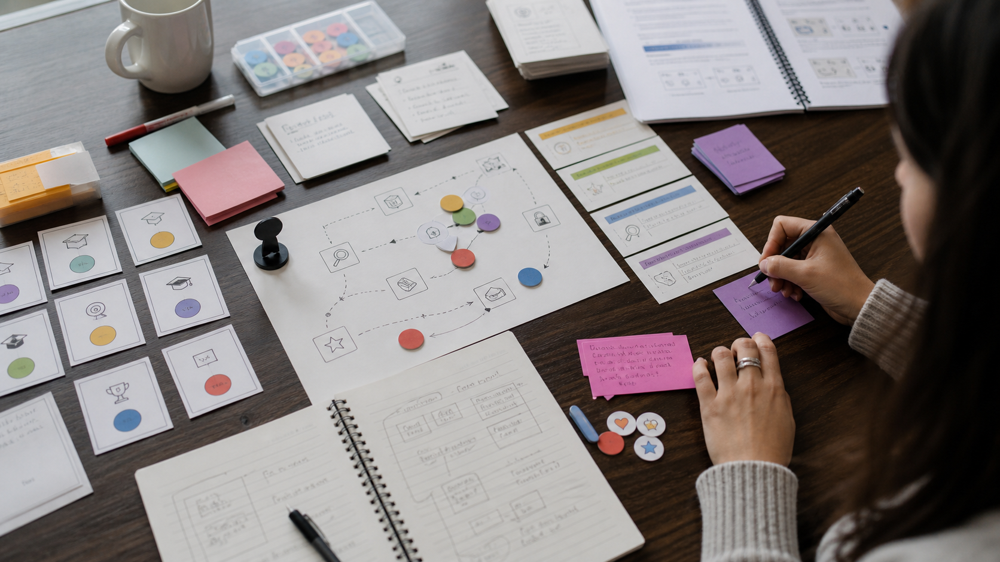

By the end of this session, you can…
- LO 7.1Build a paper prototype of one loop from your D2 in under 25 minutes.
- LO 7.2Run a 5-minute playtest cycle with a peer-as-proxy; observe silently.
- LO 7.3Revise the prototype in under 10 minutes based on one specific observation — not everything you saw.
- LO 7.4Repeat the build–play–revise cycle three times in a single session.
- LO 7.5Submit D3: the surviving version + facilitator guide v0.3 + a one-paragraph "what I cut" note.
The cheapest disproof
Every hour you spend in an engine before a loop exists on paper costs you roughly twenty hours in rework later. Paper is not a charming pedagogical exercise — it is the most efficient instrument you have for disproving a loop while disproof is still cheap.
No laptops during build
The temptation to prematurely formalize is too strong. Index cards, markers, tokens, a timer. That is the toolkit today.
One loop, not a game
You are prototyping the single loop from your D2 that carries the most risk (see Session 04 star). Not the meta-structure. Not the narrative. The loop.
Silent observation
When you run a cycle, you do not coach, clarify, or defend. You observe. You write down exactly what the player did and said. You will hate this.
Build–play–revise, three times
| Time | Activity | Facilitator cue | Deliverable |
|---|---|---|---|
| 00:00–25:00 | Build v0.1. Cards, rules on an index card, one token type per mechanic. | "If the ruleset runs past one card, your loop has too many parts." Walk the room; do not coach the loop, coach the scope. | A runnable prototype. |
| 25:00–35:00 | Play cycle 1 with a peer-as-proxy. You facilitate silently. Peer plays the loop once. | "Pen down if you are about to speak." When a learner defends, interrupt once; after that let them learn the lesson in cycle 2. | Observation notes. |
| 35:00–45:00 | Revise — pick ONE observation. Change ONE thing. | "What is the smallest change that moves the thing you wrote in the Did column?" Block multi-change revisions here, not later. | v0.2. |
| 45:00–60:00 | Play cycle 2. Different peer if possible. | Rotate pairs so a peer does not see the same prototype twice. Fresh eyes expose what a familiar player will compensate for. | Observation notes. |
| 60:00–80:00 | Revise — again, one observation, one change. | "If cycle 2 looked like cycle 1, your revision was cosmetic." Push the learner to name the mechanic that changed, not the rule. | v0.3. |
| 80:00–95:00 | Play cycle 3. | This is the cycle learners usually want to skip. Do not let them. The third run is where the loop stops being a prototype and starts being a design. | Observation notes. |
| 95:00–115:00 | Final revision pass. Write the "what I cut" paragraph. | "Name a component you removed. If you cannot, you are not done." This is the step most likely to surface scope creep from cycles 1–2. | v0.4 — this is D3. |
| 115:00–180:00 | Gallery walk; run the strongest loops for the full room; cross-critique. | Give every table a 4-minute window and a 1-minute crit window. Enforce the timer; the discipline today is cuts, not conversation. | Peer feedback log. |
Two failure modes recur. The coaching team — the builder cannot resist explaining the loop to the peer-as-proxy. Intervene the first time; if it recurs, swap peers across groups so the builder has no social incentive to coach. The avoidance team — the builder fills cycle 1 with "that would never happen in the real version" deflections. Hold the line: whatever happened in cycle 1 is the real version, because it is the only version that has met a player. Both failures resolve themselves if cycle 2 runs clean.
The most common mistake is changing three things between cycles. When cycle 2 then goes badly, you cannot tell which change caused what. Change one thing. The others go on the "for later" list.
What to write down
While your peer plays, write on a single sheet. Four columns, pen only. You will be tempted to interpret — resist. Interpretation happens in the revise window, not during play.
| Column | What it captures | What it is not |
|---|---|---|
| Time | Clock at the moment of the observation. | — |
| Did | The specific action the player took. | Not what you wish they had done. |
| Said | Verbatim quote — even a fragment. | Not paraphrase. Not interpretation. |
| Stuck? | Y/N flag if the player paused > 10s or asked a rules question. | Not a severity score. Just Y or N. |
Design is subtraction
D3 submission includes a one-paragraph note on what you removed between v0.1 and v0.4. This is graded. A prototype that grew between cycles is suspicious. A prototype that shrank is almost always stronger.
From The On-Call, v0.1 → v0.4
"Cycle 1 had four token types (evidence, time, fatigue, trust). Playtester spent 3 of 5 minutes tracking tokens rather than deciding. v0.2 cut fatigue entirely and merged trust into a single end-of-scenario score. Cycle 2 still stalled on the evidence deck; v0.3 replaced the deck with a face-up shared pile. Cycle 3 ran in 4:20 with the discrimination objective clearly visible in player decisions. Net cut: two mechanics, one ruleset page, one component type."
Did you write observations, or interpretations?
The silent-observation discipline collapses the moment you interpret. This tool reads your Did / Said / Stuck notes and flags any row that editorialized — usually by importing a feeling, a cause, or a fix — instead of capturing the observable action. It is offered after a cycle, not during. Use it to calibrate your notes before the next play.
Before next week

Before you move on…
Four questions on this session's concepts. Choices lock on first click — formative only.